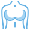
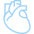
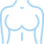

Сеть клиник «Столица» в Москве
Наши врачи
более 270 специалистовДиагностика
более 396 процедурЛечение
1011 заболеванийОперации
539 видов операцийАнализы
все виды обследованийБиопсия
Анализы
Второе мнение
Денситометрия
Диагностика на дому

Диспансеризация
Измерительные
и функциональные методы

КЛКТ
КТ
Кардиологические исследования
ЛОР-диагностика
МРТ

Маммография
Офтальмологические исследования
Рентген
УЗИ
Урологические исследования
Чек ап
Эндоскопия
Аллергология
и иммунология

Бариатрическая хирургия
Вертебрология
Гастроэнтерология
Гепатология
Гинекология
Гравитационная
хирургия крови
Дерматология

Диетология
Кардиология
Косметология

Маммология
Мануальная терапия
Массаж
Неврология
Нефрология
Онкология
Ортопедия-
травматология
Остеопатия
Оториноларингология

Офтальмология
Педиатрия

Пересадка волос
Пластическая хирургия
Проктология
Процедурный кабинет
Психотерапия
Пульмонология
Ревматология
Рефлексотерапия
Сексология
Сомнология
Стоматология
Терапия
Урология
Физиотерапия
Флебология

Хирургия
Центр лечения боли
Эндокринология

Бариатрическая хирургия

Гинекология

Детская ЛОР-
хирургия
Косметология
Ортопедия-
травматология

Отоларингология
Офтальмология
Пересадка волос

Пластическая
хирургия
Проктология
Сосудистая хирургия
Спинальная хирургия/
нейрохирургия
Урология
Хирургия

Эндокринология

Подберем врача, запишем на приём
Оставьте контактные данные, и наш специалист свяжется с вами в ближайшее время
Акции
О клинике
Сеть клиник «Столица» с 2005 года стоит на страже здоровья пациентов. За это время мы накопили бесценный опыт врачебной практики, что позволило выйти на высочайший уровень диагностики и лечения.
Отличительная особенность нашей сети — это сплоченная команда топовых врачей, врачей высшей квалификации, кандидатов и докторов медицинских наук с большим опытом работы и непревзойденным багажом знаний и умений.
Сеть клиник «Столица» предоставляет полный спектр медицинских услуг — от анализов до хирургии. Она включает в себя 5 многопрофильных медицинских центров. Это позволяет пациентам проходить комплексное обследование и получать эффективное лечение в пределах одного медицинского центра.
{kind=link}
{kind=link}